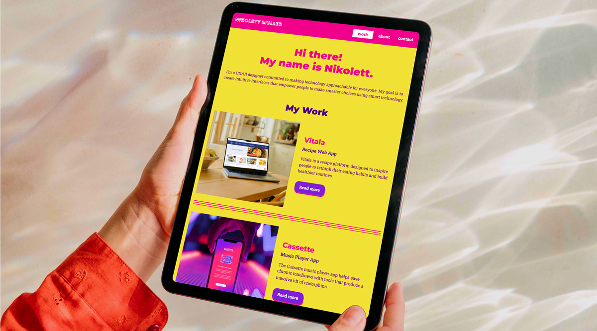
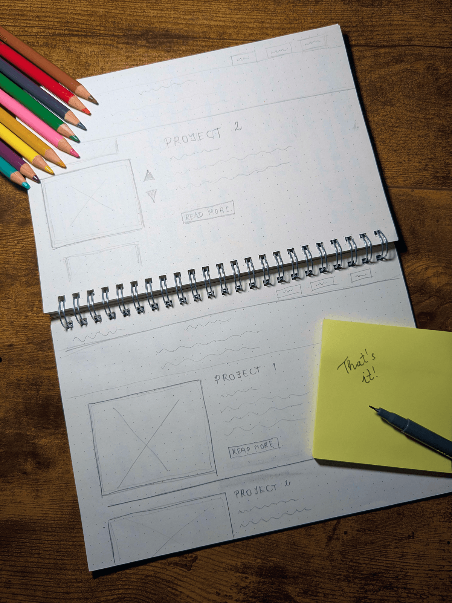
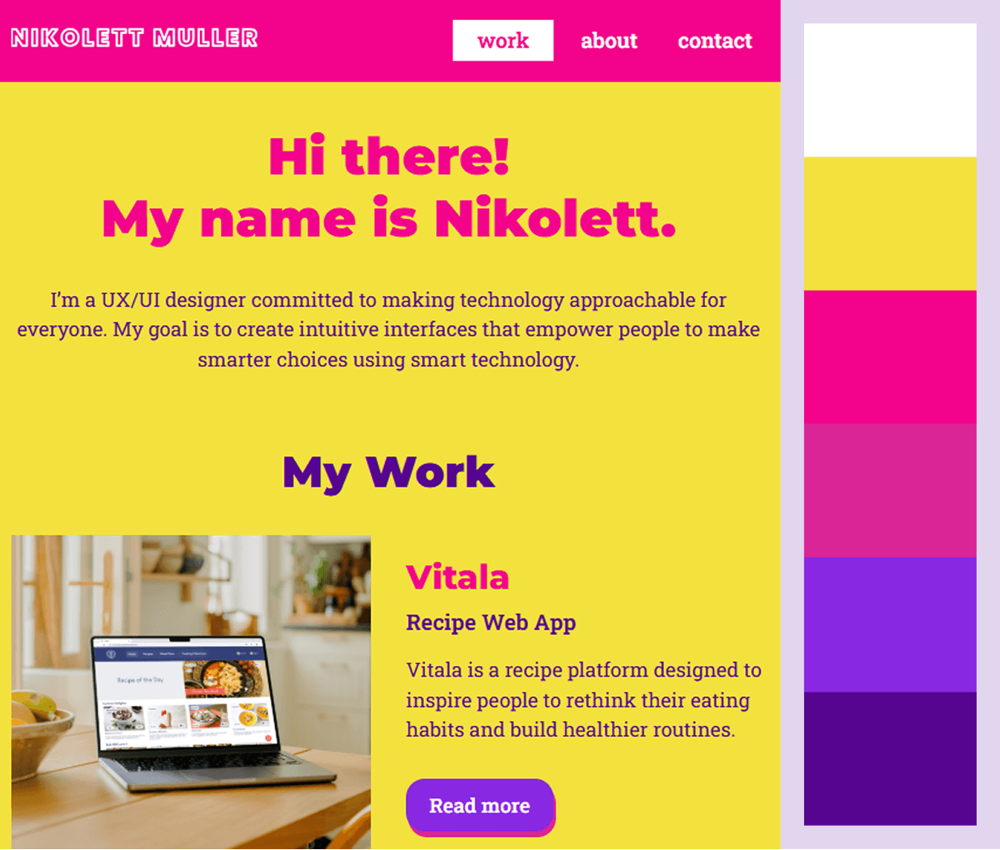
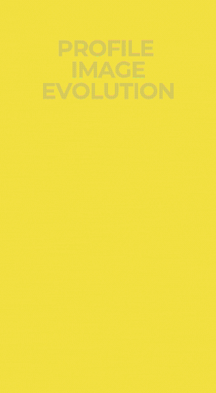
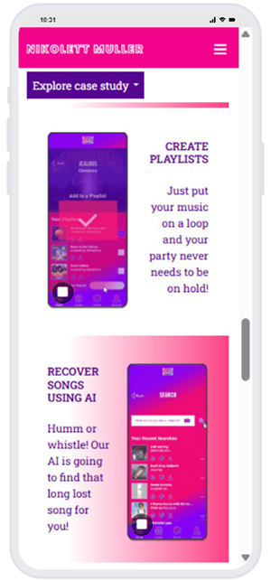
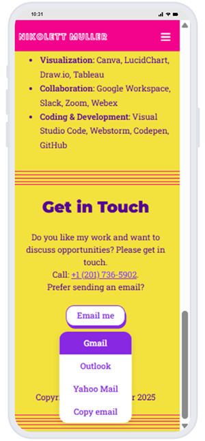

Portfolio

DESIGNER
Nikolett Muller
ROLE
UX Design, UI Design, Front-end Development
TOOLS
Figma, Canva, Miro, Zoom, Visual Studio Code, GitHub
WHERE IT BEGAN
Designing my portfolio space
To grow as a UX UI designer, I needed more than a static portfolio. I needed a space that reflects how I think, design, and build. A PDF résumé can summarize experience, but it cannot demonstrate interaction, structure, or personality. I wanted a platform where my work is not only visible, but experienced.
I had already published case studies on Behance, which helped me share my work within the design community. However, it did not give me full control over how my projects are presented. The layout, navigation, and overall experience are predefined, which makes it difficult to shape a cohesive personal story or guide how visitors explore my work.
Many portfolio templates presented similar limitations. Because I had prior experience with front end development, I chose to design and build my portfolio from scratch. This gave me full control over the structure, styling, and behavior of the site.
GOALS
Setting clear achievements
- Create a strong online presence that increases visibility and discoverability
- Clearly communicate who I am, how I think, and what I design
- Make it easy for recruiters and collaborators to navigate my work
- Apply UX principles in a real product, not just in case studies
- Build a fully custom website that reflects my personal brand and technical skills
DESIGN BRIEF
Project context
This project was part of my UI Design Certificate at CareerFoundry, where I designed and developed a personal portfolio website from scratch. The goal was to create a portfolio that not only presents my work, but also reflects how I think, design, and build digital experiences. The brief outlined content and technical requirements that guided the structure and functionality of the site.
Key features
- A homepage introducing who I am and displaying selected work
- An About page presenting my background, skills, and tools
- Project pages for each case study, explaining my design process
- A contact section accessible from every page
Technical requirements
- At least three interconnected HTML pages
- A single external CSS file
- JavaScript to enhance user experience
- Hosted on GitHub in a public repository
- Valid, error free code following web standards
- Cross browser compatibility
- Responsive design starting from 320px screens
VISUAL DIRECTION
Layout exploration
My goal was to create a visual style that feels clean, expressive, and personal, while keeping the focus on my work. To achieve this, I started by defining the layout and structure of the homepage.
I explored two layout directions: a carousel and a simple scroll. I chose a scroll-based layout because it provides a more natural and predictable browsing experience. Users are familiar with scrolling, which makes it easier to explore content without extra interaction while keeping all projects visible at a glance.

Color palette
Yellow and magenta were selected to bring energy and personality to the interface. Yellow reflects optimism and clarity, while magenta adds a sense of creativity and collaboration. To support readability and accessibility, I replaced an initial bright blue accent with blueviolet, which provided better contrast and balance within the color system.
On the homepage and About page, yellow is used as the main background to establish a bold and recognizable visual identity. For project pages, I chose a white background within the main content area to create a neutral canvas that allows imagery and case study content to stand out without distraction. To maintain consistency across the site, yellow remains present in the hero sections and the footer.
Within each project, I introduced a more contextual color approach by using tones derived from the project itself. For example, the Vitala case study uses warm orange for emphasis and deep blue for body text, reflecting the colors present in its imagery. Despite these variations, the consistent use of the main color palette in the hero sections and footer helps maintain a cohesive visual identity across all pages.

Typography
I selected Montserrat for headings and navigation due to its clean and modern appearance, which helps establish a clear visual hierarchy across the interface.
For body text, I chose Roboto Slab for its balance between structure and warmth. Its subtle serif details improve readability while maintaining a friendly and approachable tone across different screen sizes.
Defining content and projects
I began by writing the core content of the website, including the hero section introduction, short project descriptions for the homepage, and a concise About section that highlights my background, values, and motivation as a UX/UI designer. At the same time, I curated my portfolio by selecting the most representative projects from my Behance account. Each project was chosen to showcase a different set of skills, from research and wireframing to visual design and prototyping.
Preparing visual assets
To support performance and usability, I optimized all images and GIFs before uploading them to the website, ensuring faster load times and a smoother experience across devices.
In addition to reusing case study visuals, I created and refined my profile image. The final version aligns with the overall tone of the portfolio and strengthens its visual identity.

FRONT-END DEVELOPMENT
Building the structure
After completing the ideation and visual design phase, I moved on to front-end development, translating static designs into a responsive, interactive experience. I built interconnected HTML pages for the homepage, About page, and case studies, structured to support clear navigation and seamless movement between sections.
Bringing the design to life
Using CSS, I implemented the visual system defined earlier, including typography, color usage, spacing, and layout behavior. Special attention was given to maintaining consistency across pages while allowing each project to have its own visual tone.
Responsiveness was a key focus. Layouts were adapted to different screen sizes to ensure readability, proper spacing, and balanced composition across devices.
Designing interaction
Interactivity was added through JavaScript to improve usability and guide exploration. Features such as smooth scrolling, responsive navigation, and hover feedback were implemented to create a more fluid and intuitive experience.
One key feature is a contextual dropdown navigation within case studies. It appears when the user reaches the main content and disappears near the footer to avoid distraction. The interaction follows predictable patterns: the active section is highlighted, clicking outside closes the menu, and inactivity triggers automatic closing after a short delay.
User testing
User testing was not limited to checking browser compatibility. I conducted five one-hour usability testing sessions with participants representing potential users.
The goal was to observe how people navigate the portfolio, understand their expectations, and identify points of friction in real usage scenarios.
Refinement and delivery
The development process included continuous debugging and refinement to ensure consistency across browsers and devices. Layout issues, interaction edge cases, and performance considerations were addressed iteratively.
The project was version-controlled and hosted on GitHub, with a focus on maintaining clean, structured, and valid code.
USABILITY TESTING
Identifying pain points
During user testing, I evaluated how participants navigate the portfolio, interpret content, and complete key tasks such as exploring projects and initiating contact. The study included five participants with moderate technical experience, each completing realistic scenarios while thinking aloud to reveal their expectations and points of confusion.
The sessions helped uncover both minor usability issues and recurring friction points across users. Below are two high-priority problems and the design decisions made to address them.
USABILITY PROBLEM #1
During testing, participants reported that continuously playing GIFs created visual fatigue over time.
RECOMMENDATION
Introducing a stop/restart button allows users to manage motion based on their preference, improving comfort and supporting better content focus.


USABILITY PROBLEM #2
One participant attempts to use the “Email me” button but is unable to proceed because no default mail client is configured on her device.
RECOMMENDATION
Providing multiple contact pathways, such as a built-in message form or the ability to choose a preferred email client, ensures reliable task completion regardless of device configuration.
INSIGHTS
What this project taught me
I gained a deeper understanding of designing for real-world scenarios, such as considering how differences in users’ devices and system setups can affect interactions. Small assumptions, like relying on a default email client, can significantly impact usability.
Implementing these improvements on the front end helped me see how design decisions play out in real interactions and why reliability matters. Overall, this project strengthened my ability to translate user feedback into actionable design decisions, resulting in a more accessible, intuitive, and user-centered portfolio experience.